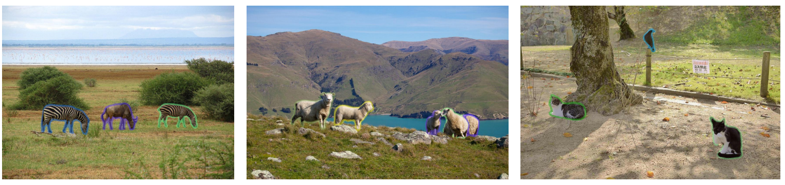

SOLO: Segmenting Objects by Locations
1The University of Adelaide,
2ByteDance AI Lab
 |
|  |
@inproceedings{wang2020solo,
title = {{SOLO}: Segmenting Objects by Locations},
author = {Wang, Xinlong and Kong, Tao and Shen, Chunhua and Jiang, Yuning and Li, Lei},
booktitle = {Proc. Eur. Conf. Computer Vision (ECCV)},
year = {2020}
}
@article{wang2020solov2,
title={SOLOv2: Dynamic and Fast Instance Segmentation},
author={Wang, Xinlong and Zhang, Rufeng and Kong, Tao and Li, Lei and Shen, Chunhua},
journal={Proc. Advances in Neural Information Processing Systems (NeurIPS)},
year={2020}
}